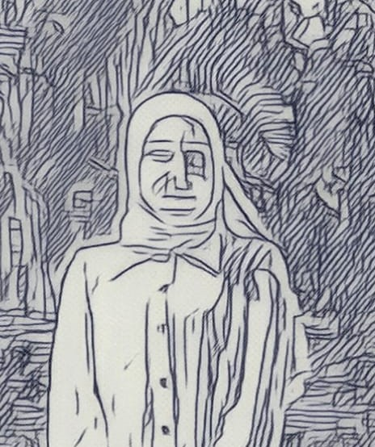
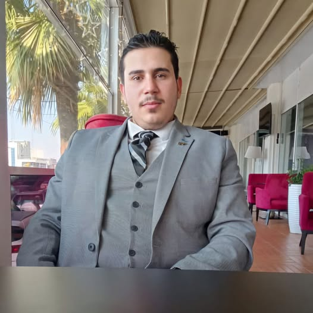

Om oss
Företagsbeskrivning:
SEE är ett modernt bilförsäljningsföretag som erbjuder ett brett sortiment av nya och begagnade bilar. Vårt mål är att ge kunderna en personlig och bekväm köpupplevelse, där kvalitet och kundnöjdhet alltid står i fokus. Vi samarbetar med ledande bilvarumärken och erbjuder ett stort utbud av både sportiga och familjevänliga modeller. Utöver bilförsäljning erbjuder vi också finansiering, försäkringar och service för att ge våra kunder en komplett bilupplevelse.
Vision
Att vara Sveriges mest pålitliga och kundorienterade bilåterförsäljare, där varje kund känner sig sedd och väl omhändertagen.
Värderingar
- Kvalitet
- Kundfokus
- Pålitlighet
- Innovation
- Hållbarhet
Vår personal
Najah Hawa – Försäljningschef
Maria är vår erfarna försäljningschef och en viktig del av AutoExpress teamet. Med över 10 års erfarenhet inom bilförsäljning har hon en djup förståelse för både marknaden och kundernas behov. Maria är känd för sin starka ledarskapsförmåga och sitt engagemang för att ge varje kund en skräddarsydd upplevelse.
Roll: Försäljningschef
Bakgrund: Tidigare erfarenhet som senior säljare och teamledare på en bilåterförsäljare. Specialitet: Att skapa långvariga kundrelationer och optimera försäljningsstrategier.
Ahmad Hawa – Kundrådgivare
Johan är vår kunniga kundrådgivare som alltid är redo att hjälpa kunderna hitta den bil som passar deras behov. Han har ett stort tekniskt intresse och kan guida kunder genom alla alternativ när det gäller bilens funktioner, finansiering och servicepaket.
Roll: Kundrådgivare
Bakgrund: 5 års erfarenhet av bilförsäljning och kundservice. Specialitet: Att hjälpa kunder med att förstå bilens tekniska aspekter och fördelar.
Mohamad Hawa – Servicerådgivare
 Mohamad är ansvarig för alla våra serviceärenden och ser till att kunderna får bästa möjliga upplevelse när det gäller bilunderhåll och reparationer. Med en bakgrund som fordonsmekaniker har han den tekniska kunskapen som gör att han kan ge exakta och välgrundade rekommendationer för bilservice.
Roll: Servicerådgivare
Bakgrund: Certifierad fordonsmekaniker och erfaren servicerådgivare. Specialitet: Att ge kunderna rådgivning om bilservice och underhåll för att förlänga livslängden på deras fordon.